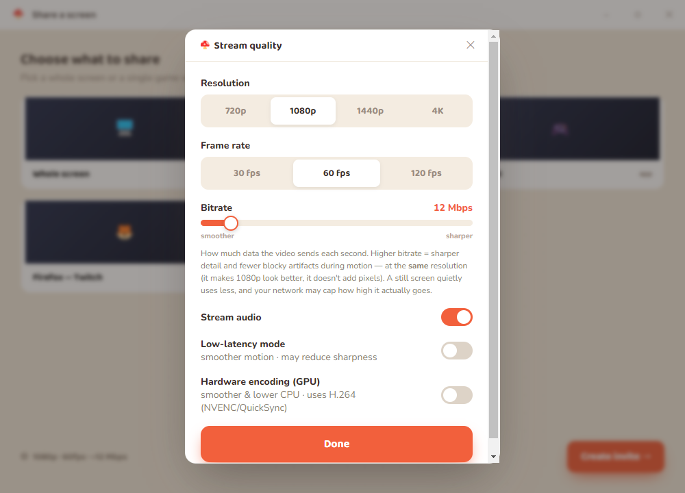

| Setting | Options | Default |
|---|---|---|
| Resolution | 720p · 1080p · 1440p · 4K | 1080p |
| Frame rate | 30 · 60 · 120 fps | 60 |
| Bitrate | 1–100 Mbps | ~12 (auto-suggested) |
| Stream audio | on / off | on |
| Low-latency mode | on / off | off |
| Hardware encoding (GPU) | on / off | off |
▦ Resolution
The number is a target height: “1080p” means 1080 vertical lines, and the width follows your monitor's real aspect ratio. So on a 21:9 ultrawide, “1080p” is 2560×1080 — still a full 1080 tall, not squeezed.
Why height-based? A fixed 1920×1080 box would crush non-16:9 monitors (ultrawide, multi-monitor) well below the height you picked. Capping the height keeps the resolution honest on any shape of screen. The capturer never upscales past the source — sharing a small window stays at its native size.
Choosing a resolution also re-suggests a sensible bitrate sized to the actual pixel count.
⏱ Frame rate
Caps how many frames per second are captured and sent: 30 60 120 fps. Higher is smoother for fast motion but costs more CPU/GPU to encode and more bandwidth.
4K120 reality check: 4K at 120 fps in software is beyond real-time on most CPUs. Either turn on Hardware encoding, or drop to 1440p120 / 1080p120 for smooth motion, or 4K60 for maximum sharpness.
📶 Bitrate
How much data the video sends each second (the slider sets a ceiling, 1–100 Mbps). Higher bitrate = sharper detail and fewer blocky artifacts during motion — at the same resolution. It makes 1080p look better; it does not add pixels or framerate.
Think of it as: resolution is the canvas size, bitrate is how much ink you're allowed to use on it.
- It's a ceiling, not a floor. A still screen sends far less than the cap — bits are only spent when the picture changes.
- Diminishing returns. Past a point the image stops improving and you're just using bandwidth. The auto-suggestion aims near the sweet spot for your resolution × fps × aspect ratio.
- The network has the final say. If the link can't carry your cap, WebRTC throttles
below it — you'll see
Limited by: bandwidthin the stats overlay.
🔊 Stream audio
Sends audio alongside the video. mushroom steam prefers per-window audio: when you share a single window, it captures only that application's sound — not your whole desktop, notifications, or music.
| Situation | What's captured |
|---|---|
| Sharing a window (Windows, native module built) | Only that app's audio (per-process) |
| Sharing a whole screen | System-wide desktop audio |
| Per-window capture unavailable | Falls back to system-wide desktop audio |
Per-window audio uses a small native module (WASAPI process loopback, Windows 10 build 20348+). It builds automatically with the Visual C++ build tools + Windows SDK; if it isn't present, audio simply falls back to system-wide — nothing breaks.
⚡ Low-latency mode
Tells the encoder what to sacrifice first when the CPU or network can't keep up:
| Mode | Under load it… | Best for |
|---|---|---|
| Off (balanced) | trades both resolution and framerate gracefully | general use — a good default |
| On (maintain-framerate) | protects framerate, lowers resolution first | fast-paced games where smooth motion matters most |
If motion feels choppy under pressure, turn this on — you'll get smoother movement (slightly softer image) instead of a low-fps slideshow. It also biases the encoder toward motion rather than fine detail.
🖥️ Hardware encoding (GPU)
The biggest lever for smoothness and CPU usage. With it on, the app prefers H.264, which is hardware-encoded by NVENC (NVIDIA), QuickSync (Intel), and AMD VCN on virtually every GPU — including older ones. The GPU does the compression in dedicated silicon, so your CPU stays free for the game and high frame rates hold up.
| Toggle | Codec preferred | Encoded by |
|---|---|---|
| Off | VP9 (quality-first) | usually software (CPU) |
| On | H.264 | GPU hardware encoder |
Verify it engaged: open the connection overlay and check
Codec reads H264 with the toggle on. If your stream was choppy with the
GPU off, this is the setting that fixes it — it's how OBS keeps high-fps streams smooth.
Why H.264 and not AV1? AV1 compresses better, but AV1 hardware encoding only exists on the newest GPUs (e.g. NVIDIA RTX 40-series). H.264 hardware encoding is near-universal, so it's the reliable choice for smoothness across machines.
⚙️ Under the hood
Codecs
Default is VP9 (great quality, broad support); turning on Hardware encoding switches the preference to H.264 for the GPU path. AV1 and VP8 act as fallbacks. The codec is negotiated peer-to-peer; the signaling server is never involved in media.
Resilience
The stream uses adaptive bitrate and graceful degradation, and a dropped network path triggers an automatic ICE restart rather than ending the call.
Connection overlay
Live diagnostics you can open any time: actual resolution/fps vs. requested, bitrate, latency, packet
loss, codec, the limiting factor (none / cpu / bandwidth), and
whether the path is direct P2P or via Relay.